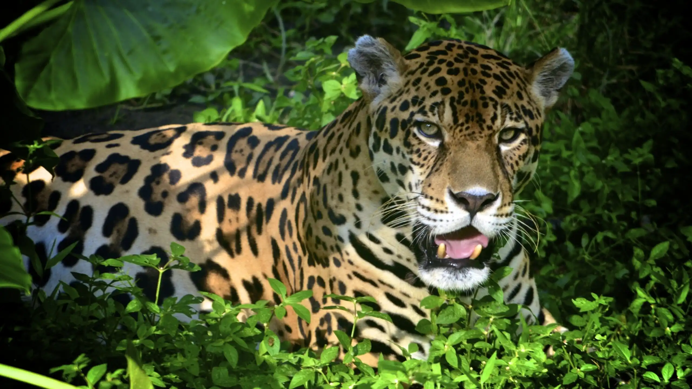
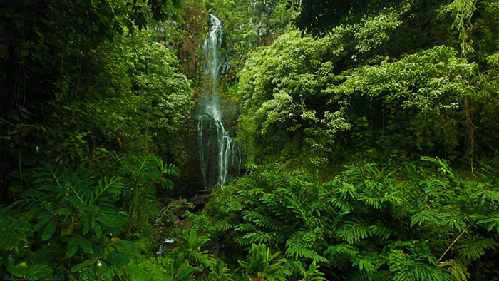
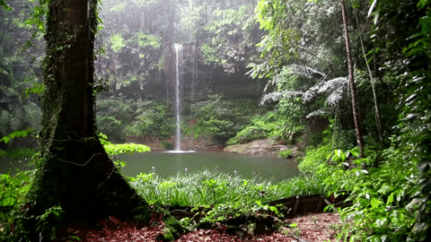

Üdvözöljük az esőerdők világában!
Üdvözlünk az Esőerdők világa weboldalon!
Fedezd fel velünk bolygónk egyik
legkülönlegesebb élőhelyét,
ahol sűrű erdők, hatalmas fák és számtalan növény- és állatfaj él.

Gyönyörű vízesések
Fedezd fel a természet szépségeit

Csodás vadvilág
Ismerkedj meg az erdő kis teremtményeivel

Amazonas-esőerdő
Fedezd fel a világ buja, zöld vadonját

Esőerdők hídjai
Ahol az építészet találkozik a természettel
Erdő madarai
Fedezd fel a trópusi madarak szépségét

Mi az az esőerdő?
Az esőerdő olyan erdő, ahol sok csapadék hullik, és a levegő általában meleg és párás. A trópusi esőerdők főként az Egyenlítő környékén találhatók. A legismertebbek közé tartozik az Amazonas esőerdője, a Kongó-medence erdőségei és Délkelet-Ázsia esőerdői.
Az esőerdők élővilága
Az esőerdőkben a fák lombkoronája alatt számtalan növény- és állatfaj él. Találkozhatunk például majmokkal, papagájokkal, jaguárokkal, békákkal és sokféle rovarral. Számos növény csak ezeken a vidékeken fordul elő.

Miért fontosak az esőerdők?
Az esőerdők élőhelyet biztosítanak sok növénynek és állatnak, segítik a víz körforgását, valamint a szén-dioxid megkötésével hozzájárulnak az éghajlat szabályozásához.
Veszélyek és védelem
Az esőerdőket veszélyezteti például a fakitermelés, a mezőgazdasági területek terjeszkedése és az élőhelyek pusztulása. Mi is segíthetünk a védelmükben azzal, hogy például kevesebb papírt pazarolunk, újrahasznosítunk, vagy odafigyelünk arra, milyen termékeket vásárolunk.